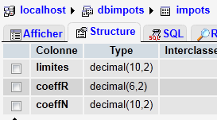

8. Tax Calculation Exercise with MySQL
We have already written three versions of this exercise. The latest version used a tax calculation class. This class retrieved the data needed for the calculation from a text file. It will now retrieve it from a database. To do this, we write an initial code that will transfer the data from the text file into a database.
The text file impots.txt is as follows:
12620:13190:15640:24740:31810:39970:48360:55790:92970:127860:151250:172040:195000:0
0:0.05:0.1:0.15:0.2:0.25:0.3:0.35:0.4:0.45:0.5:0.55:0.6:0.65
0:631:1290.5:272.5:3309.5:4900:6898.5:9316.5:12106:16754.5:23147.5:30710:39312:49062
The database to be created is as follows:
 |  |
The database is named [dbimpots] and has a single table [impots]. It is accessed by the user [root] without a password.
8.1. Importing a text file into a MySQL table (txt2mysql)
<?php
// transfers the text file containing the data needed to calculate taxes
// into a MySQL table
// the data
$TAXES = "taxes.txt";
$DATABASE = "dbimpots";
$TABLE = "taxes";
$USER = "root";
$PWD = "";
$HOST = "localhost";
// The data needed to calculate the tax has been placed in the $IMPOTS file
// with one line per table in the form
// val1:val2:val3,...
list($error, $limits, $coeffR, $coeffN) = getTables($TAXES);
// Was there an error?
if ($error) {
print "$error\n";
exit;
}//if
// We transfer these arrays to a MySQL table
$error = copyToMysql($limits, $coeffR, $coeffN, $HOST, $USER, $PWD, $BASE, $TABLE);
if ($error)
print "$error\n";
else
print "Transfer completed\n";
// end
exit;
// --------------------------------------------------------------------------
function copyToMysql($limits, $coeffR, $coeffN, $HOST, $USER, $PWD, $BASE, $TABLE) {
// copies the 3 numeric arrays $limits, $coeffR, $coeffN
// into the $TABLE table in the $BASE MySQL database
// the MySQL database is on the machine $HOST
// the user is identified by $USER and $PWD
// connection
list($error, $connection) = connect("mysql:host=$HOST;dbname=$DATABASE", $USER, $PWD);
if ($error)
return "Error connecting to MySQL as ($HOST, $USER, $PWD): $error\n";
// Delete the table
$query = "drop table $TABLE";
executeQuery($connection, $query);
// create the table
$query = "create table $TABLE (limits decimal(10,2), coeffR decimal(6,2), coeffN decimal(10,2))";
list($error, $res) = executeQuery($connection, $query);
if ($error)
return "$query: error ($error)";
// populate
for ($i = 0; $i < count($limits); $i++) {
// insert query
$query = "insert into $TABLE (limits,coeffR,coeffN) values ($limits[$i],$coeffR[$i],$coeffN[$i])";
// execute the query
list($error, $res) = executeQuery($connection, $query);
// return if error
if ($error)
return "$query: error ($error)";
}//for
// Done - disconnect
logout($connection);
// return without error
return "";
}
// --------------------------------------------------------------------------
function getTables($TAXES) {
// $IMPOTS: the name of the file containing the data for the $limites, $coeffR, and $coeffN tables
...
// end
return array("", $limits, $coeffR, $coeffN);
}
// --------------------------------------------------------------------------
function cutNewLinechar($line) {
// remove the end-of-line character from $line if it exists
...
// end
return($line);
}
// ---------------------------------------------------------------------------------
function connect($dsn, $login, $pwd) {
// connect ($login, $pwd) to the $dsn database
// Returns the connection ID and an error message
...
}
//connects
// ---------------------------------------------------------------------------------
function disconnect($connection) {
// closes the connection identified by $connection
...
}
// ---------------------------------------------------------------------------------
function executeQuery($connection, $sql) {
// executes the $sql query on the $connection
// returns an array of 2 elements ($error, $result)
...
}
Screen results:
8.2. The tax calculation program ( impots_04)
This version uses an Impôts class that retrieves the values needed to calculate the tax from a database. Here we introduce a new concept: the prepared statement. The execution of an SQL statement by a DBMS occurs in two stages:
- The query is prepared: the DBMS prepares an optimized execution plan for the query. The goal is to execute it as efficiently as possible.
- the query is executed.
If the same query is executed N times, the two previous steps are performed N times. However, it is possible to prepare the query once and execute it N times. To do this, you must use prepared queries. If $query is the SQL statement to be executed and $connection is the PDO object representing the connection:
- $statement = $connection->prepare($query) prepares a query and returns the "prepared" query
- $statement->execute() executes the prepared query.
If the prepared query is a SELECT statement, then
- $statement->fetchAll() returns all rows from the result table of the SELECT query as an array T, where T[i,j] is the value of column j in row i of the table
- $statement->fetch() returns the current row of the table as an array T, where T[j] is the value of column j in row
Prepared statements offer advantages beyond just improved efficiency. In particular, they provide greater security. Therefore, they should be used systematically.
<?php
// test -----------------------------------------------------
// definition of constants
$DATA = "data.txt";
$RESULTS = "results.txt";
$TABLE = "taxes";
$DATABASE = "dbimpots";
$USER = "root";
$PWD = "";
$HOST = "localhost";
// The data needed to calculate the tax has been placed in the MySQL table $TABLE
// belonging to the $BASE database. The table has the following structure
// limits decimal(10,2), coeffR decimal(6,2), coeffN decimal(10,2)
// the parameters for taxable individuals (marital status, number of children, annual salary)
// have been placed in the text file $DATA, with one line per taxpayer
// the results (marital status, number of children, annual salary, tax due) are stored in
// the text file $RESULTS, with one result per line
// we create an Impôts object
$I = new Taxes($HOST, $USER, $PWD, $DATABASE, $TABLE);
// Was there an error?
$error = $I->getError();
if ($error) {
print "$I->error\n";
exit;
}//if
// create a utilities object
$u = new Utilities();
// open the taxpayer data file
$data = fopen($DATA, "r");
if (!$data) {
print "Unable to open the data file [$DATA] for reading\n";
exit;
}
// Open the results file
$results = fopen($RESULTS, "w");
if (!$results) {
print "Unable to create the results file [$RESULTS]\n";
exit;
}
// Process the current line of the taxpayer data file
while ($line = fgets($data, 100)) {
// remove any end-of-line characters
$line = $u->cutNewLineChar($line);
// retrieve the 3 fields married, children, salary that make up $line
list($married, $children, $salary) = explode(",", $line);
// calculate the tax
$tax = $I->calculate($married, $children, $salary);
// print the result
fputs($results, "$married:$children:$salary:$tax\n");
// next data
}
// close the files
fclose($data);
fclose($results);
// end
exit;
// ---------------------------------------------------------------------------------
// definition of a Taxes class
class Taxes {
// attributes: the 3 data arrays
private $limits;
private $coeffR;
private $coeffN;
private $error;
private $nbLimits;
// getter
public function getError() {
return $this->error;
}
// constructor
function __ construct($HOST, $USER, $PWD, $BASE, $TABLE) {
// initializes the $limits, $coeffR, and $coeffN attributes
// the data needed to calculate the tax has been placed in the MySQL table $TABLE
// belonging to the $BASE database. The table has the following structure
// limits decimal(10,2), coeffR decimal(6,2), coeffN decimal(10,2)
// the connection to the MySQL database on the $HOST machine is made using the credentials ($USER, $PWD)
// initializes the $error field with any error
// empty if no error
//
// connect to the MySQL database
$DSN = "mysql:host=$HOST;dbname=$DATABASE";
list($error, $connection) = connect($DSN, $USER, $PWD);
if ($error) {
$this->error = "Error connecting to MySQL as ($HOST, $USER, $PWD): $error\n";
return;
}
// Read the $TABLE table
$query = "select limits,coeffR,coeffN from $TABLE";
// execute the $query query on the $connection connection
try {
$statement = $connection->prepare($query);
$statement->execute();
// process the query result
while ($columns = $statement->fetch()) {
$this->limits[] = $columns[0];
$this->coeffR[] = $columns[1];
$this->coeffN[] = $columns[2];
}
// no error
$this->error = "";
// number of elements in the limits array
$this->limitCount = count($this->limits);
} catch (PDOException $e) {
$this->error = $e->getMessage();
}
// disconnect
disconnect($connection);
}
// --------------------------------------------------------------------------
function calculate($married, $children, $salary) {
// $married: yes, no
// $children: number of children
// $salary: annual salary
// Is the object in a valid state?
if ($this->error)
return -1;
// number of shares
...
}
}
// ---------------------------------------------------------------------------------
// a utility class
class Utilities {
function cutNewLinechar($line) {
// remove the end-of-line character from $line if it exists
...
}
}
// ---------------------------------------------------------------------------------
function connect($dsn, $login, $pwd) {
// Connects ($login, $pwd) to the $dsn database
// returns the connection ID and an error message
...
}
//connect
// ---------------------------------------------------------------------------------
function disconnect($connection) {
// closes the connection identified by $connection
...
}
Results: the same as with previous versions.
Comments
The new features are lines 98–109:
- line 99: the SQL SELECT statement that retrieves the data needed to calculate the tax.
- Line 102: Preparation of the SQL SELECT statement
- Line 103: Execution of the prepared statement
- Lines 105–109: processing the result table of the SELECT statement line by line